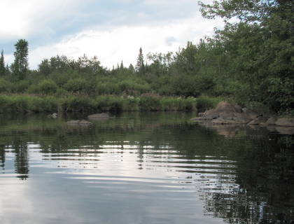

Building Local Capacity to Address Nonpoint Source Problems
Template #137

To provide a 1-week training course for "Geomorphic Analysis of Fluvial Systems" to USEPA and other state and local agencies in Chicago, IL. The purpose of this course is to provide an introduction into the concepts of fluvial geomorphology and examples of geomorphic analysis, assessment, and monitoring.
This is an introductory 1-week training course in the concepts of fluvial geomorphology. The course touches on the multi-disciplinary areas of fluvial geomorphology which is strengthened by having five instructors with different speciality fields (Andrew Simon USDA-ARS, Allen Gellis USGS MD WSC, Jim O'Connor USGS OR WSC, Jonathan Friedman USGS-BRD, and Faith Fitzpatrick USGS WI WSC). The course is a series of lectures and exercises, with an optional afternoon field trip. Topics cover watershed processes, fluvial landforms, flow and sediment movement in channels, stream equilibrium, channel stability, riparian vegetation process and function, channel evolution, and geomorphic assessment and monitoring. After hours time is scheduled to promote informal discussions between instructors and students. Students are encouraged to bring and present a question or study if they are interested in getting some specific feedback from the instructors or other students.
Faith Fitzpatrick
fafitzpa@usgs.gov